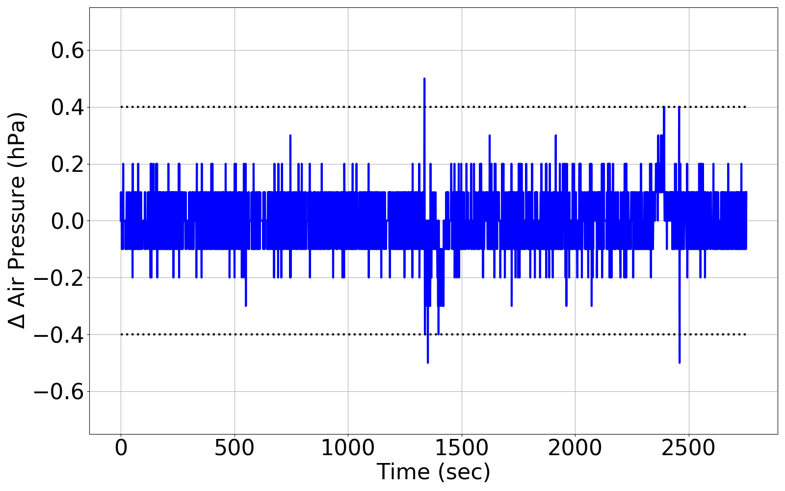
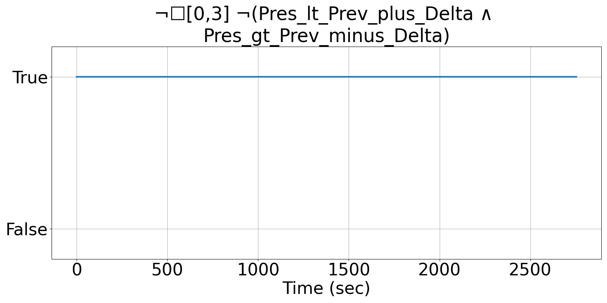
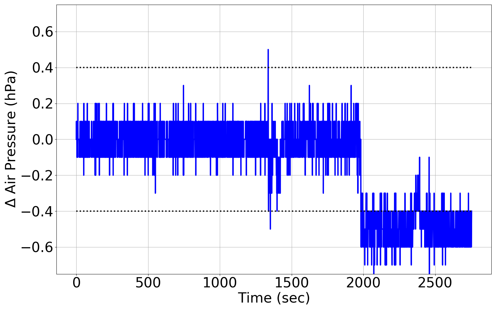
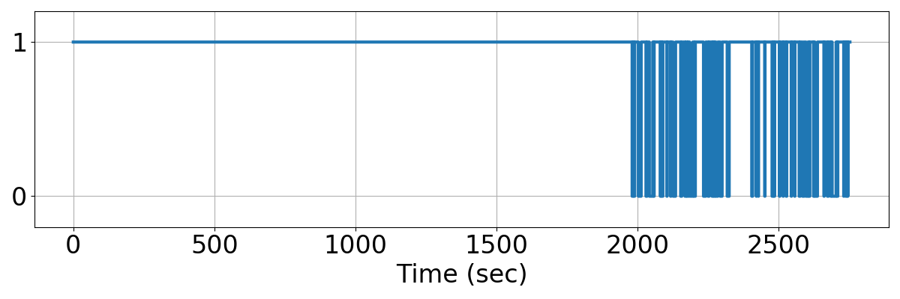
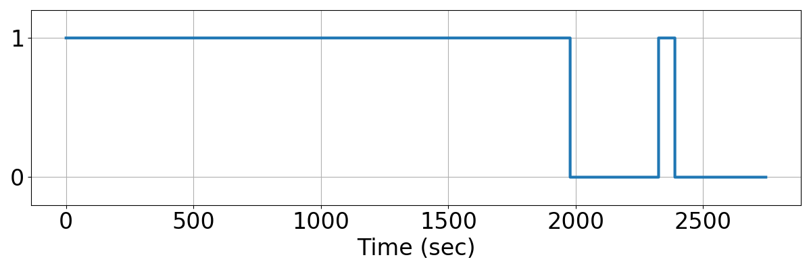

Integrating Runtime Verification into an
Automated UAS Traffic Management System
Matthew Cauwels, Abigail Hammer, Benjamin Hertz, Phillip H. Jones, Kristin Y. Rozier
This webpage contains supplementary specifications for "Integrating Runtime Verification into an
Automated UAS Traffic Management System" by M. Cauwels, A. Hammer, B. Hertz, P. H. Jones, and K. Y. Rozier
RC_UAS_8
Specification Description
The Pres should not change by more than PRES_DELTA_MAX, but it it does, allow 3 timesteps to recover
Signals Required
Pres
Boolean Conversion of Signals to Atomic Inputs
Pres_lt_Prev_plus_Delta: Pres < PREV_PRES + PRES_DELTA_MAX
Pres_gt_Prev_minus_Delta: Pres > PREV_PRES - PRES_DELTA_MAXMLTL Specification
Original: ¬☐[0,3] ¬(Pres_lt_Prev_plus_Delta ∧ Pres_gt_Prev_minus_Delta)
Updated: ¬☐[0,3] ¬(Pres_lt_Prev_plus_Delta ∧ Pres_gt_Prev_minus_Delta) ∧ ☐[0,3] (Pres_lt_Prev_plus_Delta ∧ Pres_gt_Prev_minus_Delta)
Fault Explanation
Pressure is changing too quickly
Additional Notes
PRES_DELTA_MAX should correlate to the equivalent maximum change in altitude per timestep
Figures




